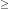
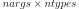
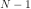

Python Types and C-Structures¶
Several new types are defined in the C-code. Most of these are
accessible from Python, but a few are not exposed due to their limited
use. Every new Python type has an associated PyObject * with an
internal structure that includes a pointer to a “method table” that
defines how the new object behaves in Python. When you receive a
Python object into C code, you always get a pointer to a
PyObject structure. Because a PyObject structure is
very generic and defines only PyObject_HEAD, by itself it
is not very interesting. However, different objects contain more
details after the PyObject_HEAD (but you have to cast to the
correct type to access them — or use accessor functions or macros).
New Python Types Defined¶
Python types are the functional equivalent in C of classes in Python. By constructing a new Python type you make available a new object for Python. The ndarray object is an example of a new type defined in C. New types are defined in C by two basic steps:
creating a C-structure (usually named
Py{Name}Object) that is binary- compatible with thePyObjectstructure itself but holds the additional information needed for that particular object;populating the
PyTypeObjecttable (pointed to by the ob_type member of thePyObjectstructure) with pointers to functions that implement the desired behavior for the type.
Instead of special method names which define behavior for Python classes, there are “function tables” which point to functions that implement the desired results. Since Python 2.2, the PyTypeObject itself has become dynamic which allows C types that can be “sub-typed “from other C-types in C, and sub-classed in Python. The children types inherit the attributes and methods from their parent(s).
There are two major new types: the ndarray ( PyArray_Type )
and the ufunc ( PyUFunc_Type ). Additional types play a
supportive role: the PyArrayIter_Type, the
PyArrayMultiIter_Type, and the PyArrayDescr_Type
. The PyArrayIter_Type is the type for a flat iterator for an
ndarray (the object that is returned when getting the flat
attribute). The PyArrayMultiIter_Type is the type of the
object returned when calling broadcast (). It handles iteration
and broadcasting over a collection of nested sequences. Also, the
PyArrayDescr_Type is the data-type-descriptor type whose
instances describe the data. Finally, there are 21 new scalar-array
types which are new Python scalars corresponding to each of the
fundamental data types available for arrays. An additional 10 other
types are place holders that allow the array scalars to fit into a
hierarchy of actual Python types.
PyArray_Type and PyArrayObject¶
-
PyArray_Type¶ The Python type of the ndarray is
PyArray_Type. In C, every ndarray is a pointer to aPyArrayObjectstructure. The ob_type member of this structure contains a pointer to thePyArray_Typetypeobject.
-
PyArrayObject¶ The
PyArrayObjectC-structure contains all of the required information for an array. All instances of an ndarray (and its subclasses) will have this structure. For future compatibility, these structure members should normally be accessed using the provided macros. If you need a shorter name, then you can make use ofNPY_AO(deprecated) which is defined to be equivalent toPyArrayObject. Direct access to the struct fields are deprecated. Use the PyArray_*(arr) form instead.typedef struct PyArrayObject { PyObject_HEAD char *data; int nd; npy_intp *dimensions; npy_intp *strides; PyObject *base; PyArray_Descr *descr; int flags; PyObject *weakreflist; } PyArrayObject;
-
PyArrayObject.PyObject_HEAD¶ This is needed by all Python objects. It consists of (at least) a reference count member (
ob_refcnt) and a pointer to the typeobject (ob_type). (Other elements may also be present if Python was compiled with special options see Include/object.h in the Python source tree for more information). The ob_type member points to a Python type object.
-
char *
PyArrayObject.data¶ Accessible via
PyArray_DATA, this data member is a pointer to the first element of the array. This pointer can (and normally should) be recast to the data type of the array.
-
int
PyArrayObject.nd¶ An integer providing the number of dimensions for this array. When nd is 0, the array is sometimes called a rank-0 array. Such arrays have undefined dimensions and strides and cannot be accessed. Macro
PyArray_NDIMdefined inndarraytypes.hpoints to this data member.NPY_MAXDIMSis the largest number of dimensions for any array.
-
npy_intp
PyArrayObject.dimensions¶ An array of integers providing the shape in each dimension as long as nd  1. The integer is always large enough to hold a pointer on the platform, so the dimension size is only limited by memory.
PyArray_DIMSis the macro associated with this data member.
-
npy_intp *
PyArrayObject.strides¶ An array of integers providing for each dimension the number of bytes that must be skipped to get to the next element in that dimension. Associated with macro
PyArray_STRIDES.
-
PyObject *
PyArrayObject.base¶ Pointed to by
PyArray_BASE, this member is used to hold a pointer to another Python object that is related to this array. There are two use cases:If this array does not own its own memory, then base points to the Python object that owns it (perhaps another array object)
If this array has the (deprecated)
NPY_ARRAY_UPDATEIFCOPYorNPY_ARRAY_WRITEBACKIFCOPYflag set, then this array is a working copy of a “misbehaved” array.
When
PyArray_ResolveWritebackIfCopyis called, the array pointed to by base will be updated with the contents of this array.
-
PyArray_Descr *
PyArrayObject.descr¶ A pointer to a data-type descriptor object (see below). The data-type descriptor object is an instance of a new built-in type which allows a generic description of memory. There is a descriptor structure for each data type supported. This descriptor structure contains useful information about the type as well as a pointer to a table of function pointers to implement specific functionality. As the name suggests, it is associated with the macro
PyArray_DESCR.
-
int
PyArrayObject.flags¶ Pointed to by the macro
PyArray_FLAGS, this data member represents the flags indicating how the memory pointed to by data is to be interpreted. Possible flags areNPY_ARRAY_C_CONTIGUOUS,NPY_ARRAY_F_CONTIGUOUS,NPY_ARRAY_OWNDATA,NPY_ARRAY_ALIGNED,NPY_ARRAY_WRITEABLE,NPY_ARRAY_WRITEBACKIFCOPY, andNPY_ARRAY_UPDATEIFCOPY.
PyArrayDescr_Type and PyArray_Descr¶
-
PyArrayDescr_Type¶ The
PyArrayDescr_Typeis the built-in type of the data-type-descriptor objects used to describe how the bytes comprising the array are to be interpreted. There are 21 statically-definedPyArray_Descrobjects for the built-in data-types. While these participate in reference counting, their reference count should never reach zero. There is also a dynamic table of user-definedPyArray_Descrobjects that is also maintained. Once a data-type-descriptor object is “registered” it should never be deallocated either. The functionPyArray_DescrFromType(…) can be used to retrieve aPyArray_Descrobject from an enumerated type-number (either built-in or user- defined).
-
PyArray_Descr¶ The
PyArray_Descrstructure lies at the heart of thePyArrayDescr_Type. While it is described here for completeness, it should be considered internal to NumPy and manipulated viaPyArrayDescr_*orPyDataType*functions and macros. The size of this structure is subject to change across versions of NumPy. To ensure compatibility:Never declare a non-pointer instance of the struct
Never perform pointer arithmatic
Never use
sizof(PyArray_Descr)
It has the following structure:
typedef struct { PyObject_HEAD PyTypeObject *typeobj; char kind; char type; char byteorder; char flags; int type_num; int elsize; int alignment; PyArray_ArrayDescr *subarray; PyObject *fields; PyObject *names; PyArray_ArrFuncs *f; PyObject *metadata; NpyAuxData *c_metadata; npy_hash_t hash; } PyArray_Descr;
-
PyTypeObject *
PyArray_Descr.typeobj¶ Pointer to a typeobject that is the corresponding Python type for the elements of this array. For the builtin types, this points to the corresponding array scalar. For user-defined types, this should point to a user-defined typeobject. This typeobject can either inherit from array scalars or not. If it does not inherit from array scalars, then the
NPY_USE_GETITEMandNPY_USE_SETITEMflags should be set in theflagsmember.
-
char
PyArray_Descr.kind¶ A character code indicating the kind of array (using the array interface typestring notation). A ‘b’ represents Boolean, a ‘i’ represents signed integer, a ‘u’ represents unsigned integer, ‘f’ represents floating point, ‘c’ represents complex floating point, ‘S’ represents 8-bit zero-terminated bytes, ‘U’ represents 32-bit/character unicode string, and ‘V’ represents arbitrary.
-
char
PyArray_Descr.type¶ A traditional character code indicating the data type.
-
char
PyArray_Descr.byteorder¶ A character indicating the byte-order: ‘>’ (big-endian), ‘<’ (little- endian), ‘=’ (native), ‘|’ (irrelevant, ignore). All builtin data- types have byteorder ‘=’.
-
char
PyArray_Descr.flags¶ A data-type bit-flag that determines if the data-type exhibits object- array like behavior. Each bit in this member is a flag which are named as:
-
NPY_ITEM_REFCOUNT¶ Indicates that items of this data-type must be reference counted (using
Py_INCREFandPy_DECREF).
-
NPY_ITEM_HASOBJECT¶ Same as
NPY_ITEM_REFCOUNT.
-
NPY_LIST_PICKLE¶ Indicates arrays of this data-type must be converted to a list before pickling.
-
NPY_ITEM_IS_POINTER¶ Indicates the item is a pointer to some other data-type
-
NPY_NEEDS_INIT¶ Indicates memory for this data-type must be initialized (set to 0) on creation.
-
NPY_NEEDS_PYAPI¶ Indicates this data-type requires the Python C-API during access (so don’t give up the GIL if array access is going to be needed).
-
NPY_USE_GETITEM¶ On array access use the
f->getitemfunction pointer instead of the standard conversion to an array scalar. Must use if you don’t define an array scalar to go along with the data-type.
-
NPY_USE_SETITEM¶ When creating a 0-d array from an array scalar use
f->setiteminstead of the standard copy from an array scalar. Must use if you don’t define an array scalar to go along with the data-type.
-
NPY_FROM_FIELDS¶ The bits that are inherited for the parent data-type if these bits are set in any field of the data-type. Currently (
NPY_NEEDS_INIT|NPY_LIST_PICKLE|NPY_ITEM_REFCOUNT|NPY_NEEDS_PYAPI).
-
NPY_OBJECT_DTYPE_FLAGS¶ Bits set for the object data-type: (
NPY_LIST_PICKLE|NPY_USE_GETITEM|NPY_ITEM_IS_POINTER|NPY_REFCOUNT|NPY_NEEDS_INIT|NPY_NEEDS_PYAPI).
-
PyDataType_FLAGCHK(PyArray_Descr *dtype, int flags)¶ Return true if all the given flags are set for the data-type object.
-
PyDataType_REFCHK(PyArray_Descr *dtype)¶ Equivalent to
PyDataType_FLAGCHK(dtype,NPY_ITEM_REFCOUNT).
-
-
int
PyArray_Descr.type_num¶ A number that uniquely identifies the data type. For new data-types, this number is assigned when the data-type is registered.
-
int
PyArray_Descr.elsize¶ For data types that are always the same size (such as long), this holds the size of the data type. For flexible data types where different arrays can have a different elementsize, this should be 0.
-
int
PyArray_Descr.alignment¶ A number providing alignment information for this data type. Specifically, it shows how far from the start of a 2-element structure (whose first element is a
char), the compiler places an item of this type:offsetof(struct {char c; type v;}, v)
-
PyArray_ArrayDescr *
PyArray_Descr.subarray¶ If this is non-
NULL, then this data-type descriptor is a C-style contiguous array of another data-type descriptor. In other-words, each element that this descriptor describes is actually an array of some other base descriptor. This is most useful as the data-type descriptor for a field in another data-type descriptor. The fields member should beNULLif this is non-NULL(the fields member of the base descriptor can be non-NULLhowever). ThePyArray_ArrayDescrstructure is defined usingtypedef struct { PyArray_Descr *base; PyObject *shape; } PyArray_ArrayDescr;
The elements of this structure are:
-
PyArray_Descr *
PyArray_ArrayDescr.base¶ The data-type-descriptor object of the base-type.
-
PyArray_Descr *
-
PyObject *
PyArray_Descr.fields¶ If this is non-NULL, then this data-type-descriptor has fields described by a Python dictionary whose keys are names (and also titles if given) and whose values are tuples that describe the fields. Recall that a data-type-descriptor always describes a fixed-length set of bytes. A field is a named sub-region of that total, fixed-length collection. A field is described by a tuple composed of another data- type-descriptor and a byte offset. Optionally, the tuple may contain a title which is normally a Python string. These tuples are placed in this dictionary keyed by name (and also title if given).
-
PyArray_ArrFuncs *
PyArray_Descr.f¶ A pointer to a structure containing functions that the type needs to implement internal features. These functions are not the same thing as the universal functions (ufuncs) described later. Their signatures can vary arbitrarily.
-
NpyAuxData *
PyArray_Descr.c_metadata¶ Metadata specific to the C implementation of the particular dtype. Added for NumPy 1.7.0.
-
Npy_hash_t *
PyArray_Descr.hash¶ Currently unused. Reserved for future use in caching hash values.
-
PyArray_ArrFuncs¶ Functions implementing internal features. Not all of these function pointers must be defined for a given type. The required members are
nonzero,copyswap,copyswapn,setitem,getitem, andcast. These are assumed to be non-NULLandNULLentries will cause a program crash. The other functions may beNULLwhich will just mean reduced functionality for that data-type. (Also, the nonzero function will be filled in with a default function if it isNULLwhen you register a user-defined data-type).typedef struct { PyArray_VectorUnaryFunc *cast[NPY_NTYPES]; PyArray_GetItemFunc *getitem; PyArray_SetItemFunc *setitem; PyArray_CopySwapNFunc *copyswapn; PyArray_CopySwapFunc *copyswap; PyArray_CompareFunc *compare; PyArray_ArgFunc *argmax; PyArray_DotFunc *dotfunc; PyArray_ScanFunc *scanfunc; PyArray_FromStrFunc *fromstr; PyArray_NonzeroFunc *nonzero; PyArray_FillFunc *fill; PyArray_FillWithScalarFunc *fillwithscalar; PyArray_SortFunc *sort[NPY_NSORTS]; PyArray_ArgSortFunc *argsort[NPY_NSORTS]; PyObject *castdict; PyArray_ScalarKindFunc *scalarkind; int **cancastscalarkindto; int *cancastto; PyArray_FastClipFunc *fastclip; PyArray_FastPutmaskFunc *fastputmask; PyArray_FastTakeFunc *fasttake; PyArray_ArgFunc *argmin; } PyArray_ArrFuncs;
The concept of a behaved segment is used in the description of the function pointers. A behaved segment is one that is aligned and in native machine byte-order for the data-type. The
nonzero,copyswap,copyswapn,getitem, andsetitemfunctions can (and must) deal with mis-behaved arrays. The other functions require behaved memory segments.-
void
cast(void *from, void *to, npy_intp n, void *fromarr, void *toarr)¶ An array of function pointers to cast from the current type to all of the other builtin types. Each function casts a contiguous, aligned, and notswapped buffer pointed at by from to a contiguous, aligned, and notswapped buffer pointed at by to The number of items to cast is given by n, and the arguments fromarr and toarr are interpreted as PyArrayObjects for flexible arrays to get itemsize information.
-
PyObject *
getitem(void *data, void *arr)¶ A pointer to a function that returns a standard Python object from a single element of the array object arr pointed to by data. This function must be able to deal with “misbehaved “(misaligned and/or swapped) arrays correctly.
-
int
setitem(PyObject *item, void *data, void *arr)¶ A pointer to a function that sets the Python object item into the array, arr, at the position pointed to by data . This function deals with “misbehaved” arrays. If successful, a zero is returned, otherwise, a negative one is returned (and a Python error set).
-
void
copyswapn(void *dest, npy_intp dstride, void *src, npy_intp sstride, npy_intp n, int swap, void *arr)¶
-
void
copyswap(void *dest, void *src, int swap, void *arr)¶ These members are both pointers to functions to copy data from src to dest and swap if indicated. The value of arr is only used for flexible (
NPY_STRING,NPY_UNICODE, andNPY_VOID) arrays (and is obtained fromarr->descr->elsize). The second function copies a single value, while the first loops over n values with the provided strides. These functions can deal with misbehaved src data. If src is NULL then no copy is performed. If swap is 0, then no byteswapping occurs. It is assumed that dest and src do not overlap. If they overlap, then usememmove(…) first followed bycopyswap(n)with NULL valuedsrc.
-
int
compare(const void* d1, const void* d2, void* arr)¶ A pointer to a function that compares two elements of the array,
arr, pointed to byd1andd2. This function requires behaved (aligned and not swapped) arrays. The return value is 1 if *d1> *d2, 0 if *d1== *d2, and -1 if *d1< *d2. The array objectarris used to retrieve itemsize and field information for flexible arrays.
-
int
argmax(void* data, npy_intp n, npy_intp* max_ind, void* arr)¶ A pointer to a function that retrieves the index of the largest of
nelements inarrbeginning at the element pointed to bydata. This function requires that the memory segment be contiguous and behaved. The return value is always 0. The index of the largest element is returned inmax_ind.
-
void
dotfunc(void* ip1, npy_intp is1, void* ip2, npy_intp is2, void* op, npy_intp n, void* arr)¶ A pointer to a function that multiplies two
n-length sequences together, adds them, and places the result in element pointed to byopofarr. The start of the two sequences are pointed to byip1andip2. To get to the next element in each sequence requires a jump ofis1andis2bytes, respectively. This function requires behaved (though not necessarily contiguous) memory.
-
int
scanfunc(FILE* fd, void* ip, void* arr)¶ A pointer to a function that scans (scanf style) one element of the corresponding type from the file descriptor
fdinto the array memory pointed to byip. The array is assumed to be behaved. The last argumentarris the array to be scanned into. Returns number of receiving arguments successfully assigned (which may be zero in case a matching failure occurred before the first receiving argument was assigned), or EOF if input failure occurs before the first receiving argument was assigned. This function should be called without holding the Python GIL, and has to grab it for error reporting.
-
int
fromstr(char* str, void* ip, char** endptr, void* arr)¶ A pointer to a function that converts the string pointed to by
strto one element of the corresponding type and places it in the memory location pointed to byip. After the conversion is completed,*endptrpoints to the rest of the string. The last argumentarris the array into which ip points (needed for variable-size data- types). Returns 0 on success or -1 on failure. Requires a behaved array. This function should be called without holding the Python GIL, and has to grab it for error reporting.
-
Bool
nonzero(void* data, void* arr)¶ A pointer to a function that returns TRUE if the item of
arrpointed to bydatais nonzero. This function can deal with misbehaved arrays.
-
void
fill(void* data, npy_intp length, void* arr)¶ A pointer to a function that fills a contiguous array of given length with data. The first two elements of the array must already be filled- in. From these two values, a delta will be computed and the values from item 3 to the end will be computed by repeatedly adding this computed delta. The data buffer must be well-behaved.
-
void
fillwithscalar(void* buffer, npy_intp length, void* value, void* arr)¶ A pointer to a function that fills a contiguous
bufferof the givenlengthwith a single scalarvaluewhose address is given. The final argument is the array which is needed to get the itemsize for variable-length arrays.
-
int
sort(void* start, npy_intp length, void* arr)¶ An array of function pointers to a particular sorting algorithms. A particular sorting algorithm is obtained using a key (so far
NPY_QUICKSORT,NPY_HEAPSORT, andNPY_MERGESORTare defined). These sorts are done in-place assuming contiguous and aligned data.
-
int
argsort(void* start, npy_intp* result, npy_intp length, void *arr)¶ An array of function pointers to sorting algorithms for this data type. The same sorting algorithms as for sort are available. The indices producing the sort are returned in
result(which must be initialized with indices 0 tolength-1inclusive).
-
PyObject *
castdict¶ Either
NULLor a dictionary containing low-level casting functions for user- defined data-types. Each function is wrapped in aPyCObject *and keyed by the data-type number.
-
NPY_SCALARKIND
scalarkind(PyArrayObject* arr)¶ A function to determine how scalars of this type should be interpreted. The argument is
NULLor a 0-dimensional array containing the data (if that is needed to determine the kind of scalar). The return value must be of typeNPY_SCALARKIND.
-
int **
cancastscalarkindto¶ Either
NULLor an array ofNPY_NSCALARKINDSpointers. These pointers should each be eitherNULLor a pointer to an array of integers (terminated byNPY_NOTYPE) indicating data-types that a scalar of this data-type of the specified kind can be cast to safely (this usually means without losing precision).
-
int *
cancastto¶ Either
NULLor an array of integers (terminated byNPY_NOTYPE) indicated data-types that this data-type can be cast to safely (this usually means without losing precision).
-
void
fastclip(void *in, npy_intp n_in, void *min, void *max, void *out)¶ A function that reads
n_initems fromin, and writes tooutthe read value if it is within the limits pointed to byminandmax, or the corresponding limit if outside. The memory segments must be contiguous and behaved, and eitherminormaxmay beNULL, but not both.
-
void
fastputmask(void *in, void *mask, npy_intp n_in, void *values, npy_intp nv)¶ A function that takes a pointer
into an array ofn_initems, a pointermaskto an array ofn_inboolean values, and a pointervalsto an array ofnvitems. Items fromvalsare copied intoinwherever the value inmaskis non-zero, tilingvalsas needed ifnv < n_in. All arrays must be contiguous and behaved.
-
void
fasttake(void *dest, void *src, npy_intp *indarray, npy_intp nindarray, npy_intp n_outer, npy_intp m_middle, npy_intp nelem, NPY_CLIPMODE clipmode)¶ A function that takes a pointer
srcto a C contiguous, behaved segment, interpreted as a 3-dimensional array of shape(n_outer, nindarray, nelem), a pointerindarrayto a contiguous, behaved segment ofm_middleinteger indices, and a pointerdestto a C contiguous, behaved segment, interpreted as a 3-dimensional array of shape(n_outer, m_middle, nelem). The indices inindarrayare used to indexsrcalong the second dimension, and copy the corresponding chunks ofnelemitems intodest.clipmode(which can take on the valuesNPY_RAISE,NPY_WRAPorNPY_CLIP) determines how will indices smaller than 0 or larger thannindarraywill be handled.
-
int
argmin(void* data, npy_intp n, npy_intp* min_ind, void* arr)¶ A pointer to a function that retrieves the index of the smallest of
nelements inarrbeginning at the element pointed to bydata. This function requires that the memory segment be contiguous and behaved. The return value is always 0. The index of the smallest element is returned inmin_ind.
-
void
The PyArray_Type typeobject implements many of the features of
Python objects including the tp_as_number, tp_as_sequence, tp_as_mapping, and tp_as_buffer interfaces. The rich comparison) is also used along with new-style attribute lookup for
member (tp_members) and properties
(tp_getset).
The PyArray_Type can also be sub-typed.
Tip
The tp_as_number methods use a generic approach to call whatever
function has been registered for handling the operation. When the
_multiarray_umath module is imported, it sets the numeric operations
for all arrays to the corresponding ufuncs. This choice can be changed with
PyUFunc_ReplaceLoopBySignature The tp_str and tp_repr
methods can also be altered using PyArray_SetStringFunction.
PyUFunc_Type and PyUFuncObject¶
-
PyUFunc_Type¶ The ufunc object is implemented by creation of the
PyUFunc_Type. It is a very simple type that implements only basic getattribute behavior, printing behavior, and has call behavior which allows these objects to act like functions. The basic idea behind the ufunc is to hold a reference to fast 1-dimensional (vector) loops for each data type that supports the operation. These one-dimensional loops all have the same signature and are the key to creating a new ufunc. They are called by the generic looping code as appropriate to implement the N-dimensional function. There are also some generic 1-d loops defined for floating and complexfloating arrays that allow you to define a ufunc using a single scalar function (e.g. atanh).
-
PyUFuncObject¶ The core of the ufunc is the
PyUFuncObjectwhich contains all the information needed to call the underlying C-code loops that perform the actual work. While it is described here for completeness, it should be considered internal to NumPy and manipulated viaPyUFunc_*functions. The size of this structure is subject to change across versions of NumPy. To ensure compatibility:Never declare a non-pointer instance of the struct
Never perform pointer arithmetic
Never use
sizeof(PyUFuncObject)
It has the following structure:
typedef struct { PyObject_HEAD int nin; int nout; int nargs; int identity; PyUFuncGenericFunction *functions; void **data; int ntypes; int reserved1; const char *name; char *types; const char *doc; void *ptr; PyObject *obj; PyObject *userloops; int core_enabled; int core_num_dim_ix; int *core_num_dims; int *core_dim_ixs; int *core_offsets; char *core_signature; PyUFunc_TypeResolutionFunc *type_resolver; PyUFunc_LegacyInnerLoopSelectionFunc *legacy_inner_loop_selector; PyUFunc_MaskedInnerLoopSelectionFunc *masked_inner_loop_selector; npy_uint32 *op_flags; npy_uint32 *iter_flags; /* new in API version 0x0000000D */ npy_intp *core_dim_sizes; npy_intp *core_dim_flags; } PyUFuncObject;
-
int
PyUFuncObject.nin¶ The number of input arguments.
-
int
PyUFuncObject.nout¶ The number of output arguments.
-
int
PyUFuncObject.nargs¶ The total number of arguments (nin + nout). This must be less than
NPY_MAXARGS.
-
int
PyUFuncObject.identity¶ Either
PyUFunc_One,PyUFunc_Zero,PyUFunc_NoneorPyUFunc_AllOnesto indicate the identity for this operation. It is only used for a reduce-like call on an empty array.
-
void
PyUFuncObject.functions(char** args, npy_intp* dims, npy_intp* steps, void* extradata)¶ An array of function pointers — one for each data type supported by the ufunc. This is the vector loop that is called to implement the underlying function dims [0] times. The first argument, args, is an array of nargs pointers to behaved memory. Pointers to the data for the input arguments are first, followed by the pointers to the data for the output arguments. How many bytes must be skipped to get to the next element in the sequence is specified by the corresponding entry in the steps array. The last argument allows the loop to receive extra information. This is commonly used so that a single, generic vector loop can be used for multiple functions. In this case, the actual scalar function to call is passed in as extradata. The size of this function pointer array is ntypes.
-
void **
PyUFuncObject.data¶ Extra data to be passed to the 1-d vector loops or
NULLif no extra-data is needed. This C-array must be the same size ( i.e. ntypes) as the functions array.NULLis used if extra_data is not needed. Several C-API calls for UFuncs are just 1-d vector loops that make use of this extra data to receive a pointer to the actual function to call.
-
int
PyUFuncObject.ntypes¶ The number of supported data types for the ufunc. This number specifies how many different 1-d loops (of the builtin data types) are available.
-
int
PyUFuncObject.reserved1¶ Unused.
-
char *
PyUFuncObject.name¶ A string name for the ufunc. This is used dynamically to build the __doc__ attribute of ufuncs.
-
char *
PyUFuncObject.types¶ An array of  8-bit type_numbers which contains the type signature for the function for each of the supported (builtin) data types. For each of the ntypes functions, the corresponding set of type numbers in this array shows how the args argument should be interpreted in the 1-d vector loop. These type numbers do not have to be the same type and mixed-type ufuncs are supported.
-
char *
PyUFuncObject.doc¶ Documentation for the ufunc. Should not contain the function signature as this is generated dynamically when __doc__ is retrieved.
-
void *
PyUFuncObject.ptr¶ Any dynamically allocated memory. Currently, this is used for dynamic ufuncs created from a python function to store room for the types, data, and name members.
-
PyObject *
PyUFuncObject.obj¶ For ufuncs dynamically created from python functions, this member holds a reference to the underlying Python function.
-
PyObject *
PyUFuncObject.userloops¶ A dictionary of user-defined 1-d vector loops (stored as CObject ptrs) for user-defined types. A loop may be registered by the user for any user-defined type. It is retrieved by type number. User defined type numbers are always larger than
NPY_USERDEF.
-
int
PyUFuncObject.core_enabled¶ 0 for scalar ufuncs; 1 for generalized ufuncs
-
int
PyUFuncObject.core_num_dim_ix¶ Number of distinct core dimension names in the signature
-
int *
PyUFuncObject.core_num_dims¶ Number of core dimensions of each argument
-
int *
PyUFuncObject.core_dim_ixs¶ Dimension indices in a flattened form; indices of argument
kare stored incore_dim_ixs[core_offsets[k] : core_offsets[k] + core_numdims[k]]
-
int *
PyUFuncObject.core_offsets¶ Position of 1st core dimension of each argument in
core_dim_ixs, equivalent to cumsum(core_num_dims)
-
char *
PyUFuncObject.core_signature¶ Core signature string
-
PyUFunc_TypeResolutionFunc *
PyUFuncObject.type_resolver¶ A function which resolves the types and fills an array with the dtypes for the inputs and outputs
-
PyUFunc_LegacyInnerLoopSelectionFunc *
PyUFuncObject.legacy_inner_loop_selector¶ A function which returns an inner loop. The
legacyin the name arises because for NumPy 1.6 a better variant had been planned. This variant has not yet come about.
-
void *
PyUFuncObject.reserved2¶ For a possible future loop selector with a different signature.
-
PyUFunc_MaskedInnerLoopSelectionFunc *
PyUFuncObject.masked_inner_loop_selector¶ Function which returns a masked inner loop for the ufunc
-
npy_uint32
PyUFuncObject.op_flags¶ Override the default operand flags for each ufunc operand.
-
npy_uint32
PyUFuncObject.iter_flags¶ Override the default nditer flags for the ufunc.
Added in API version 0x0000000D
-
npy_intp *
PyUFuncObject.core_dim_sizes¶ For each distinct core dimension, the possible frozen size if
UFUNC_CORE_DIM_SIZE_INFERREDis 0
-
npy_uint32 *
PyUFuncObject.core_dim_flags¶ For each distinct core dimension, a set of
UFUNC_CORE_DIM*flagsUFUNC_CORE_DIM_CAN_IGNOREif the dim name ends in?UFUNC_CORE_DIM_SIZE_INFERREDif the dim size will be determined from the operands and not from a frozen signature
PyArrayIter_Type and PyArrayIterObject¶
-
PyArrayIter_Type¶ This is an iterator object that makes it easy to loop over an N-dimensional array. It is the object returned from the flat attribute of an ndarray. It is also used extensively throughout the implementation internals to loop over an N-dimensional array. The tp_as_mapping interface is implemented so that the iterator object can be indexed (using 1-d indexing), and a few methods are implemented through the tp_methods table. This object implements the next method and can be used anywhere an iterator can be used in Python.
-
PyArrayIterObject¶ The C-structure corresponding to an object of
PyArrayIter_Typeis thePyArrayIterObject. ThePyArrayIterObjectis used to keep track of a pointer into an N-dimensional array. It contains associated information used to quickly march through the array. The pointer can be adjusted in three basic ways: 1) advance to the “next” position in the array in a C-style contiguous fashion, 2) advance to an arbitrary N-dimensional coordinate in the array, and 3) advance to an arbitrary one-dimensional index into the array. The members of thePyArrayIterObjectstructure are used in these calculations. Iterator objects keep their own dimension and strides information about an array. This can be adjusted as needed for “broadcasting,” or to loop over only specific dimensions.typedef struct { PyObject_HEAD int nd_m1; npy_intp index; npy_intp size; npy_intp coordinates[NPY_MAXDIMS]; npy_intp dims_m1[NPY_MAXDIMS]; npy_intp strides[NPY_MAXDIMS]; npy_intp backstrides[NPY_MAXDIMS]; npy_intp factors[NPY_MAXDIMS]; PyArrayObject *ao; char *dataptr; Bool contiguous; } PyArrayIterObject;
-
int
PyArrayIterObject.nd_m1¶  where
 is the number of dimensions in the
underlying array.
is the number of dimensions in the
underlying array.
-
npy_intp *
PyArrayIterObject.strides¶ The strides of the array. How many bytes needed to jump to the next element in each dimension.
-
npy_intp *
PyArrayIterObject.backstrides¶ How many bytes needed to jump from the end of a dimension back to its beginning. Note that
backstrides[k] == strides[k] * dims_m1[k], but it is stored here as an optimization.
-
npy_intp *
PyArrayIterObject.factors¶ This array is used in computing an N-d index from a 1-d index. It contains needed products of the dimensions.
-
PyArrayObject *
PyArrayIterObject.ao¶ A pointer to the underlying ndarray this iterator was created to represent.
-
char *
PyArrayIterObject.dataptr¶ This member points to an element in the ndarray indicated by the index.
-
Bool
PyArrayIterObject.contiguous¶ This flag is true if the underlying array is
NPY_ARRAY_C_CONTIGUOUS. It is used to simplify calculations when possible.
-
int
How to use an array iterator on a C-level is explained more fully in
later sections. Typically, you do not need to concern yourself with
the internal structure of the iterator object, and merely interact
with it through the use of the macros PyArray_ITER_NEXT (it),
PyArray_ITER_GOTO (it, dest), or PyArray_ITER_GOTO1D
(it, index). All of these macros require the argument it to be a
PyArrayIterObject *.
PyArrayMultiIter_Type and PyArrayMultiIterObject¶
-
PyArrayMultiIter_Type¶ This type provides an iterator that encapsulates the concept of broadcasting. It allows
arrays to be broadcast together
so that the loop progresses in C-style contiguous fashion over the
broadcasted array. The corresponding C-structure is the
PyArrayMultiIterObjectwhose memory layout must begin any object, obj, passed in to thePyArray_Broadcast(obj) function. Broadcasting is performed by adjusting array iterators so that each iterator represents the broadcasted shape and size, but has its strides adjusted so that the correct element from the array is used at each iteration.
-
PyArrayMultiIterObject¶ typedef struct { PyObject_HEAD int numiter; npy_intp size; npy_intp index; int nd; npy_intp dimensions[NPY_MAXDIMS]; PyArrayIterObject *iters[NPY_MAXDIMS]; } PyArrayMultiIterObject;
-
int
PyArrayMultiIterObject.numiter¶ The number of arrays that need to be broadcast to the same shape.
-
int
PyArrayMultiIterObject.nd¶ The number of dimensions in the broadcasted result.
-
npy_intp *
PyArrayMultiIterObject.dimensions¶ The shape of the broadcasted result (only
ndslots are used).
-
PyArrayIterObject **
PyArrayMultiIterObject.iters¶ An array of iterator objects that holds the iterators for the arrays to be broadcast together. On return, the iterators are adjusted for broadcasting.
-
int
PyArrayNeighborhoodIter_Type and PyArrayNeighborhoodIterObject¶
-
PyArrayNeighborhoodIter_Type¶ This is an iterator object that makes it easy to loop over an N-dimensional neighborhood.
-
PyArrayNeighborhoodIterObject¶ The C-structure corresponding to an object of
PyArrayNeighborhoodIter_Typeis thePyArrayNeighborhoodIterObject.typedef struct { PyObject_HEAD int nd_m1; npy_intp index, size; npy_intp coordinates[NPY_MAXDIMS] npy_intp dims_m1[NPY_MAXDIMS]; npy_intp strides[NPY_MAXDIMS]; npy_intp backstrides[NPY_MAXDIMS]; npy_intp factors[NPY_MAXDIMS]; PyArrayObject *ao; char *dataptr; npy_bool contiguous; npy_intp bounds[NPY_MAXDIMS][2]; npy_intp limits[NPY_MAXDIMS][2]; npy_intp limits_sizes[NPY_MAXDIMS]; npy_iter_get_dataptr_t translate; npy_intp nd; npy_intp dimensions[NPY_MAXDIMS]; PyArrayIterObject* _internal_iter; char* constant; int mode; } PyArrayNeighborhoodIterObject;
PyArrayFlags_Type and PyArrayFlagsObject¶
-
PyArrayFlags_Type¶ When the flags attribute is retrieved from Python, a special builtin object of this type is constructed. This special type makes it easier to work with the different flags by accessing them as attributes or by accessing them as if the object were a dictionary with the flag names as entries.
-
PyArrayFlagsObject¶ typedef struct PyArrayFlagsObject { PyObject_HEAD PyObject *arr; int flags; } PyArrayFlagsObject;
ScalarArrayTypes¶
There is a Python type for each of the different built-in data types
that can be present in the array Most of these are simple wrappers
around the corresponding data type in C. The C-names for these types
are Py{TYPE}ArrType_Type where {TYPE} can be
Bool, Byte, Short, Int, Long, LongLong, UByte, UShort, UInt, ULong, ULongLong, Half, Float, Double, LongDouble, CFloat, CDouble, CLongDouble, String, Unicode, Void, and Object.
These type names are part of the C-API and can therefore be created in
extension C-code. There is also a PyIntpArrType_Type and a
PyUIntpArrType_Type that are simple substitutes for one of the
integer types that can hold a pointer on the platform. The structure
of these scalar objects is not exposed to C-code. The function
PyArray_ScalarAsCtype (..) can be used to extract the C-type
value from the array scalar and the function PyArray_Scalar
(…) can be used to construct an array scalar from a C-value.
Other C-Structures¶
A few new C-structures were found to be useful in the development of NumPy. These C-structures are used in at least one C-API call and are therefore documented here. The main reason these structures were defined is to make it easy to use the Python ParseTuple C-API to convert from Python objects to a useful C-Object.
PyArray_Dims¶
-
PyArray_Dims¶ This structure is very useful when shape and/or strides information is supposed to be interpreted. The structure is:
typedef struct { npy_intp *ptr; int len; } PyArray_Dims;
The members of this structure are
-
npy_intp *
PyArray_Dims.ptr¶ A pointer to a list of (
npy_intp) integers which usually represent array shape or array strides.
-
int
PyArray_Dims.len¶ The length of the list of integers. It is assumed safe to access ptr [0] to ptr [len-1].
-
npy_intp *
PyArray_Chunk¶
-
PyArray_Chunk¶ This is equivalent to the buffer object structure in Python up to the ptr member. On 32-bit platforms (i.e. if
NPY_SIZEOF_INT==NPY_SIZEOF_INTP), the len member also matches an equivalent member of the buffer object. It is useful to represent a generic single-segment chunk of memory.typedef struct { PyObject_HEAD PyObject *base; void *ptr; npy_intp len; int flags; } PyArray_Chunk;
The members are
-
PyObject *
PyArray_Chunk.base¶ The Python object this chunk of memory comes from. Needed so that memory can be accounted for properly.
-
void *
PyArray_Chunk.ptr¶ A pointer to the start of the single-segment chunk of memory.
-
int
PyArray_Chunk.flags¶ Any data flags (e.g.
NPY_ARRAY_WRITEABLE) that should be used to interpret the memory.
-
PyObject *
PyArrayInterface¶
See also
-
PyArrayInterface¶ The
PyArrayInterfacestructure is defined so that NumPy and other extension modules can use the rapid array interface protocol. The__array_struct__method of an object that supports the rapid array interface protocol should return aPyCObjectthat contains a pointer to aPyArrayInterfacestructure with the relevant details of the array. After the new array is created, the attribute should beDECREF’d which will free thePyArrayInterfacestructure. Remember toINCREFthe object (whose__array_struct__attribute was retrieved) and point the base member of the newPyArrayObjectto this same object. In this way the memory for the array will be managed correctly.typedef struct { int two; int nd; char typekind; int itemsize; int flags; npy_intp *shape; npy_intp *strides; void *data; PyObject *descr; } PyArrayInterface;
-
int
PyArrayInterface.two¶ the integer 2 as a sanity check.
-
int
PyArrayInterface.nd¶ the number of dimensions in the array.
-
char
PyArrayInterface.typekind¶ A character indicating what kind of array is present according to the typestring convention with ‘t’ -> bitfield, ‘b’ -> Boolean, ‘i’ -> signed integer, ‘u’ -> unsigned integer, ‘f’ -> floating point, ‘c’ -> complex floating point, ‘O’ -> object, ‘S’ -> (byte-)string, ‘U’ -> unicode, ‘V’ -> void.
-
int
PyArrayInterface.itemsize¶ The number of bytes each item in the array requires.
-
int
PyArrayInterface.flags¶ Any of the bits
NPY_ARRAY_C_CONTIGUOUS(1),NPY_ARRAY_F_CONTIGUOUS(2),NPY_ARRAY_ALIGNED(0x100),NPY_ARRAY_NOTSWAPPED(0x200), orNPY_ARRAY_WRITEABLE(0x400) to indicate something about the data. TheNPY_ARRAY_ALIGNED,NPY_ARRAY_C_CONTIGUOUS, andNPY_ARRAY_F_CONTIGUOUSflags can actually be determined from the other parameters. The flagNPY_ARR_HAS_DESCR(0x800) can also be set to indicate to objects consuming the version 3 array interface that the descr member of the structure is present (it will be ignored by objects consuming version 2 of the array interface).
-
npy_intp *
PyArrayInterface.strides¶ An array containing the number of bytes to jump to get to the next element in each dimension.
-
void *
PyArrayInterface.data¶ A pointer to the first element of the array.
-
PyObject *
PyArrayInterface.descr¶ A Python object describing the data-type in more detail (same as the descr key in
__array_interface__). This can beNULLif typekind and itemsize provide enough information. This field is also ignored unlessARR_HAS_DESCRflag is on in flags.
-
int
Internally used structures¶
Internally, the code uses some additional Python objects primarily for memory management. These types are not accessible directly from Python, and are not exposed to the C-API. They are included here only for completeness and assistance in understanding the code.
-
PyUFuncLoopObject¶ A loose wrapper for a C-structure that contains the information needed for looping. This is useful if you are trying to understand the ufunc looping code. The
PyUFuncLoopObjectis the associated C-structure. It is defined in theufuncobject.hheader.
-
PyUFuncReduceObject¶ A loose wrapper for the C-structure that contains the information needed for reduce-like methods of ufuncs. This is useful if you are trying to understand the reduce, accumulate, and reduce-at code. The
PyUFuncReduceObjectis the associated C-structure. It is defined in theufuncobject.hheader.
-
PyUFunc_Loop1d¶ A simple linked-list of C-structures containing the information needed to define a 1-d loop for a ufunc for every defined signature of a user-defined data-type.
-
PyArrayMapIter_Type¶ Advanced indexing is handled with this Python type. It is simply a loose wrapper around the C-structure containing the variables needed for advanced array indexing. The associated C-structure,
PyArrayMapIterObject, is useful if you are trying to understand the advanced-index mapping code. It is defined in thearrayobject.hheader. This type is not exposed to Python and could be replaced with a C-structure. As a Python type it takes advantage of reference- counted memory management.